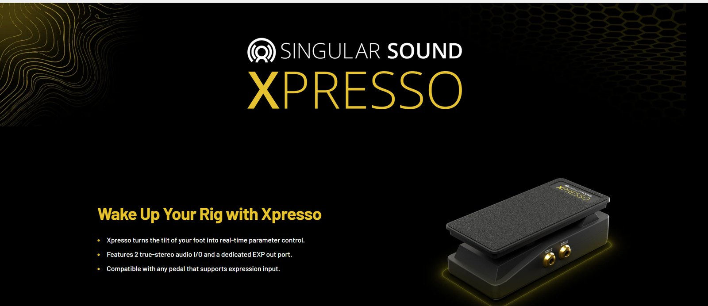
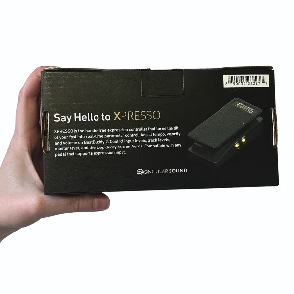
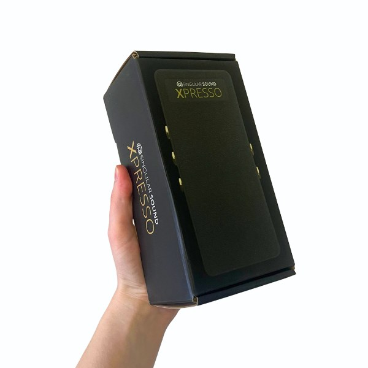
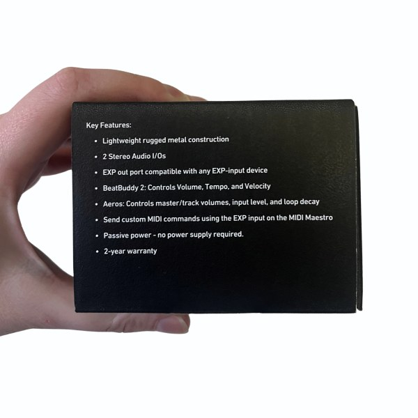

I write the product page, packaging, and ad copy for Singular Sound’s pedals, from the Xpresso expression pedal to BeatBuddy 2 video ads.
Role
Product page, packaging, and ad copy
Company
Singular Sound
Timeline
2026, ongoing
Tools
Shopify, Adobe Premiere, online captioning tools, Google Sheets
Selling a pedal in three bullets
Xpresso product page · Singular Sound website
Xpresso turns the tilt of your foot into real-time parameter control. The page opens with the headline “Wake Up Your Rig with Xpresso,” then keeps it short: three bullets covering what it does, what it connects to, and what it works with.

The Xpresso product page
Say hello on the box
Xpresso packaging
On the box, the same idea gets more room. The back panel opens with “Say Hello to XPRESSO” and a short paragraph on what it controls: tempo, velocity, and volume on BeatBuddy 2, and input levels, track levels, master level, and loop decay on Aeros. A key features list on the side covers the details at a glance, from the rugged metal build to the 2-year warranty.

Back of the box

Front and side

Key features panel
BeatBuddy 2: a 5.82 ROAS in March
BeatBuddy 2 video ad · Live since February 2026
This eight-second animation for BeatBuddy 2 went live in February. I wrote the on-screen copy and the caption.
The BeatBuddy 2 video ad
The copy
The on-screen text runs four short lines, each pairing a benefit with a highlighted word:
Add responsive drums to your playing.
Navigate setlists hands-free.
Visual display of the beat.
The ultimate drummer companion.
The caption:
Everything you need to rock in just one pedal. BeatBuddy 2 delivers the power of live drums with the ease of hands-free control.
Order the BeatBuddy 2 today — with free U.S. Priority shipping over $99 + flexible payments.
The results
March: 5.82
April: 5.54
May: 3.09
June (first half): 2.27
July: 3.41
Silver Aeros: an 8.43 ROAS in May
Aeros Loop Studio video ad · Live since April 2026
This video for the silver Aeros Loop Studio launched in April. I wrote the on-screen copy and the caption.
The Aeros Loop Studio video ad
The copy
The caption:
Record. Mix. Repeat. Never miss a beat with Aeros Loop Studio. Create without limits.
Order yours today with free U.S. Priority shipping over $99 + flexible payments.
The results
4.11 ROAS in April, its first month
8.43 in May
3.4 in July
What the ROAS curve taught me
Singular Sound’s overall ROAS typically runs between 2 and 4 a month. Both ads opened well above that, then settled into it: BeatBuddy 2 went from 5.82 in March to 3.41 in July, and Aeros went from 8.43 in May to 3.4 in July. That’s a normal arc for ad creative, which tends to wear out as the same people see it again and again. A winning ad doesn’t stay a winner on its own.
What I’d do differently
I’d plan a creative refresh around the two-month mark, so a new version is ready to launch as soon as the curve starts to fall, instead of letting one ad run until it fades. I’d also test new hooks and opening lines in each refresh, so every round teaches us something about what makes people stop scrolling.
ROAS (return on ad spend) is the sales an ad drives per $1 spent on it. The figures come from monthly ad reports.